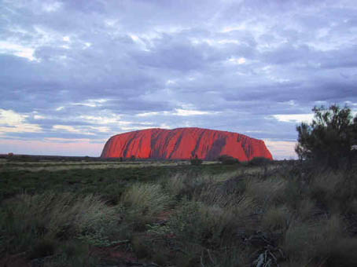
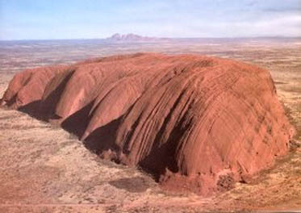
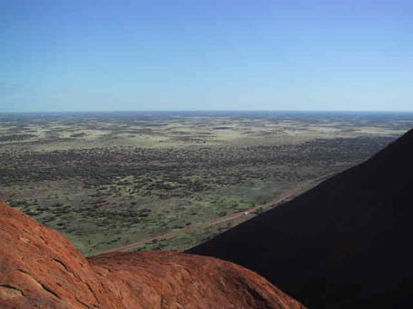
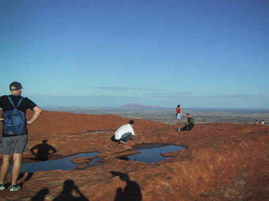
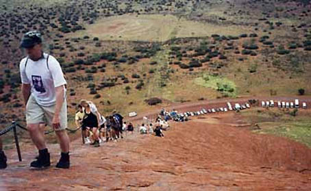

|
第三章 現代のアボリジニー  エアーズ・ロック（Ayers Rock）は周囲9.4ｋｍ 高さ348ｍの巨大な一枚岩だ。エアーズ・ロックの周辺は、日本のアニメ映画「風の谷のナウシカ」のモデルとなったマウント･オルガを含む1325平方キロメートルの国立公園を形成している。エアーズ・ロックというのは英語名で、南オーストラリア州の首相ヘンリー･エアーズにちなんで名づけられた。アボリジニーはエアーズ・ロックを「ウルル」（Ululu）と呼び、これは「日陰の場所」という意味だ。 エアーズ・ロックの周りは果てしなく砂漠が続いている。エアーズ・ロックの近くでは音がしなく大地の音だけが鳴り響いているような感じがする。 図：上空から見たエアーズ･ロック  前方に見えるのはマウントオルガ。周りには広い砂漠が続いている 図：頂上から眺めるオーストラリアの大地   この広大な景色を見ているとアボリジニーの「神」の存在を感じることができる。だがエアーズ･ロックをめぐっては白人とアボリジニーの間で長い間争いが続いている。「利益」をとるか、「信仰」をとるか、である。もちろん、エアーズ・ロックは今もアナング族の聖地であり今もアボリジニーにとって神聖な場所だ。 エアーズ・ロックは1950年に観光の道が開かれ、政府はアボリジニーにとってこの地域が自然と密接な関係を維持していたことに十分な配慮を払わず国立公園に変えてしまった。1976年にアナング族はこの領域の返還を要求して1985年に認められるが、同時に政府が借りるという協定を結びアナング族の人々に公園入場料の25％と年間使用量として150,000豪ドルを支払うことでアボリジニーは2084年まで彼らの土地を貸すことを義務づけられた。いずれ、観光客や観光会社などがこの地から去ることにはなるが、今現在は観光名物として母なる存在であるエアーズ・ロックが観光客に登られるのをアボリジニーは黙ってみていなければならない。男性もしくは女性が入ることが禁じられている場所でさえも観光地として旅行者の興味と関心だけで入られている。いつかここにアボリジニーの聖地としての静かな時間が戻ってきたとしても、アボリジニーの心には悲しみが刻まれたままだろう。 年間約50万人の観光客がウルルの鎖をつたって登っている。アボリジニーにとっては創造の母の背中を土足で踏まれているのだ。アボリジニーは決して登らない。もちろん本当は観光客にも登って欲しくない。しかし現実には70%の観光客がウルルに登っているのだ。 図：鎖をつたって登る人々  アナング族のアボリジニーはこう訴える 『皆様が登ろうとしている岩は、歴史的重要な意味を持つ神聖な岩です。 本来は登るべきではない岩です。岩に登ってみても本来の姿は見えません。 岩から離れて、暫く耳を傾けてください。岩の声を聞くことができるはずです。 耳を傾けて岩が何を言おうとしているのかを悟る、それが真に岩を理解することになるのです。 これで私たちがなぜ岩に登らないようにお願いしているか、おわかりいただけると思います。 今述べたことを理解していただけることを願っています。理解していただきたいためにお願いしているのです。 登らないで下さいといわれてがっかりする人もいらっしゃると思いますが、 アナングの習慣とおきてを皆様に知って頂く必要がありますのでここで説明しています。 皆様もこの説明を聞くと納得して次のようにおっしゃるでしょう。 「なるほど、わかりました。アナングのおきてに従いましょう。登らないようにしましょう」と』 これは誰もが訪ねるビジターのパンフレットに日本語で載っていたものから抜粋した （http://uluruoz.tripod.co.jp/nt.olga.htmより） 「聖地では、座り、見て、何をしたいのかを静かに感じていればいいんだ。精神的なパワーが得られるから。」 聖地とは、「母なる大地」と世界を創造した精霊たちへの感謝の気持ちを祈る場所なのだ。この広い大地の大自然の中で生きてきたアボリジニーにとっての聖地は簡単には言い表すことができないが、初めてやってきてこの大地のありがたみも大して感じていないまま軽々しく登っていいところではない、と私は強く感じた。 |